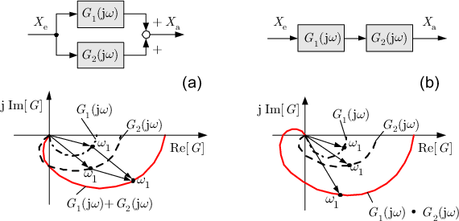
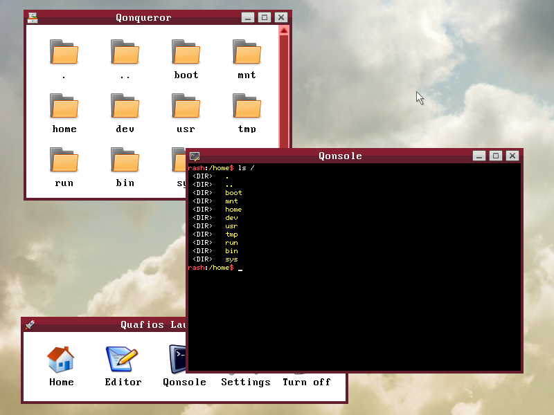
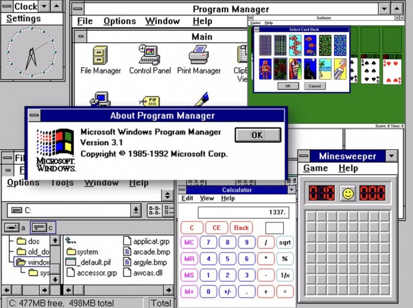
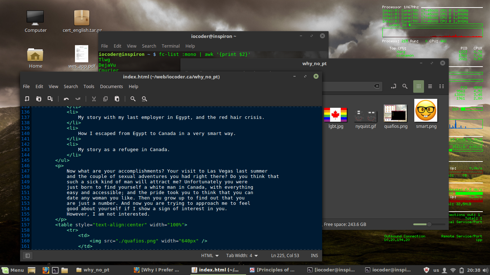

Many people ask me why I do always prefer to have no sexual nor intimate partner in my life. I receive questions like: "Do you live with your partner?", "Do you have a boyfriend?", "Are you in love?", etc. with the purpose of finding out whether I would date them (those who ask). Simply put, I have had sex with a lot of men BUT I have never fallen in love with any of them . And I really suspect that someday I will find a man who is worth loving.
Unfortunately, all the men whom I have met in my life have weaker mental skills than I do. I will not accept to get involved into a relationship with a guy who doesn't even know how to apply Laplace Transform to a differential equation to perform frequency-domain analysis on the system. Even this simple basic Calculus seems to be hard-to-understand by all those good-looking men you meet in your life. They only have muscles. But intelligence? they are just stupid.
|  |
| Nyquist plot for the frequency response of two transfer functions, summed vs. cascaded. |
Whenever I get into a philosophical discussion with those men, or even talk about Computer Science, Mathematics, Psychology, or whatever field of study I am interested in, I realize that I am speaking to an unlettered person. They want to be my man, while they don't even know what Kinsey scale is! This is ridiculous. I feel sorry for them and I really try hard to be dumb enough when I talk with them so that they don't feel bad about themselves. This is not practical in the long term as conversations quickly become very silly and boring.
I started to practice computer programming since I was 13 years old. I did my hobby OS when I was at high school, even before joining a CS school. I was the top student over my CS class, with a very high GPA. I studied 61 courses in university, spanning very wide areas of Computer Science and Automatic Control. I have knowledge in Math, Statistics, Computer Science, Electronics Engineering, Computer Architecture, Artificial Intelligence, Psychology, Sociology, Gender and Sexuality Studies, Physics, Chemistry, History, Islamic Studies, Biology, and many other fields. What do you know? VOID. We don't even share any area of interest! All what you can talk about is how the arse of a random lady you have seen in the subway train is big.
I am a highly-educated, smart gay man. I am not complimenting myself; all the records confirm what I have just said. I will not fall in love with a warehouse worker who shares no interests with me just because they have muscles.
|
68000 processor
interrupt structure.
Computer Architecture
is one of the too many things I am interested in.
I'd rather talk about it than your silly sexual adventures. |
I always have something to tell about myself. My history is full of interesting stories where I mostly won in the end:
Now what are your accomplishments? Your visit to Las Vegas last summer and the couple of sexual adventures you had right there? Do you think that such a sick kind of man will attract me? Unfortunately you were just born to find yourself a Canadian white man, with everything easy and accessible (except Ontario's health care system); and the pride took you to think that you can date any woman you like. Then you grow up to find out that you are just a number. And now you are trying to approach me to feel good about yourself if I show any sign of interest in you. I am sorry... I am not interested.
|  |
| Quafios, my hobby operating system. |
|  |
| I came from that era. |
Alright, let's assume that you are a software engineer and you work for a very big company that provides web and smart-phone solutions. You consider yourself a computer geek. You know Ruby on Rails and Node.js, as well as Python, Java, and other cool languages/tools. I've got some questions for you to assess your level of geekness:
I even did much more than that with my computer. I'm sorry, you are not qualified to be a geek. We are not amused.
|  |
| While writing the HTML code for this website. |
If you are living with us in this world, you must have heard once that women are looking for a man who loves her for herself, not her body. Unfortunately, those women are looking for a hypothetical man that has never existed. Evolutionary Biology tells us that all men are driven by their lust. We, as women, decided to treat you the same way; and the results are amazing: we can see the signs of low self-confidence on the face of every man in Vancouver, after being rejected too much in their life.
I'm very proud to be a very smart, intelligent, and geeky strong independent woman.
| The strong independent woman I feel I am like. |